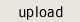

The Donnie 2017 Digital Art Contest and ExhibitNow open for entries. Contest is international in scope and open to all digital artists and photographers, beginner or advanced. Test your mettle. Compete with the best.
MOCA has arranged for the Atelier Progressif Creative Space in Catskill NY (USA) for a live print (physical) exhibit of winning and Director's Choice images from this contest. MOCA will print and hang these images at no charge to the artists. Click for details and full information about this live print exhibit at: Atelier Progressif Creative Space.
It is our seventeenth consecutive annual digital art contest. The Donnies are the most prestigious and influential digital art competition on the Web.
Fee is only $55.00 per image.
Payment via PayPal or credit card.
Maximum six entries per artist. Still images only. JPG format. Image size 1 - 2 megabytes each. Images are submittted via our upload page and posted chronologically to the online contest site as received.
It offers eight awards: first, second and third prizes plus five honorable mentions. Winning images and 12 Director's Choices will be given year-long exposure on the MOCA site and will be included in the Atelier Progressif Creative Space exhibit March 4 - 31.
MOCA is a non-profit educational and charitable organization, chartered by the New York State Department of Education (USA). It is supported exclusively by contest fees and the contributions of artists, viewers, and friends. It has been the Web's primary showcase for digital art for more than 20 years.
Contest judge is Steve Soper. Steve has been a MOCA graphics editor for many years and has had a long and distinguished career as a photographer, digital artist, graphic designer, and Photoshop specialist. He is responsible for creating the Donnie catalog.
MOCA will publish a full-color catalog of the contest (at extra charge). To browse or order among our 20 published catalogs, click catalogs.
Make payment by credit card or PayPal before or after upload of image(s). Payment assures acceptance into the exhibit.
Copyright remains with the respective artists.
You can submit your art (1 - 6 images) today! Contest closes for entries Tuesday, January 31, 2017, 11:59 p.m. (ET)

Comments, inquiries, questions? Write:
don@moca.virtual.museum
Don Archer, MOCA director and contest administratorGood luck to all.